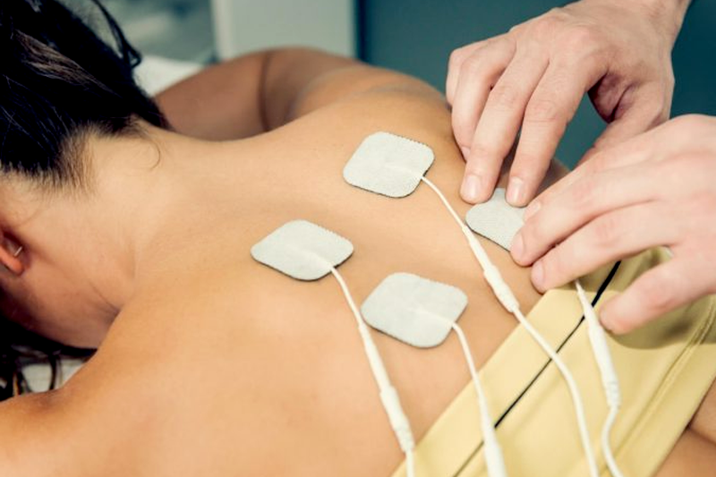

Médico especialista em dor crônica:
Vou te ajudar a se livrar da dor!
Com um tratamento altamente eficaz que engloba medicamentos orais ou injetáveis, abordagem multidisciplinar com uma equipe que inclui, além do médico, fisioterapeuta, nutricionista e psicólogo, por exemplo; procedimentos minimamente invasivos (como infiltrações articulares, bloqueios de nervos etc.).
Agendar Consulta
Especialidades:
-
Intervenção na Dor
Diagnóstico preciso, alívio imediato e abordagem especializada para tratar condições e distúrbios responsáveis pela dor crônica.

-
Ortopedia e Traumatologia
Cuidado com problemas estruturais e funcionais do sistema musculoesquelético, incluindo lesões causadas por movimentos inadequados.

-
Ortopedia Oncológica
Diagnóstico e cuidado especializado para tumores no sistema ósseo, abrangendo ossos, músculos, tendões e cartilagens afetados pelo câncer.

Sobre o médico especialista no tratamento da dor:
Dr. Gleison Bezerra
Sou um médico intervencionista da dor e minha missão é trazer alívio e esperança para quem convive com a dor crônica. Entendo os desafios que você enfrentou e sei que pode parecer difícil acreditar em uma solução. Estou aqui para mudar essa realidade. Quero ouvir sua história, compreender suas necessidades e, com base nos avanços da medicina, criar um plano de tratamento personalizado. Juntos, podemos alcançar o conforto e a qualidade de vida que você merece. Acredite, viver sem dor é possível!
Agendar Consulta
Você já ouviu falar sobre:
Medicina Regenerativa?
A medicina regenerativa musculoesquelética é uma área inovadora da medicina que visa tratar lesões e doenças que afetam músculos, ossos, articulações, tendões e ligamentos. Ela utiliza métodos avançados para estimular os processos naturais de reparação do corpo, ajudando a regenerar tecidos danificados e aliviar dores, muitas vezes evitando cirurgias invasivas.
Entre as principais abordagens, destacam-se:
-
Terapia com células mesenquimais
Utiliza células-tronco para estimular a regeneração de tecidos musculoesqueléticos danificados.

-
Plasma rico em plaquetas (PRP)
Aplica componentes do sangue para promover a cura e reduzir inflamações.

-
Laser de alta intensidade (HILT)
Alivia a dor e acelera a cicatrização com laser profundo em tecidos lesionados.
 -
Proloterapia
Injeta substâncias irritantes para estimular a reparação de ligamentos e tendões lesionados.

-
Terapia por ondas de choque
Usa vibrações de alta energia para estimular o fluxo sanguíneo e a regeneração.

-
Ácido hialurônico
Lubrifica articulações e melhora a mobilidade, sendo útil em casos de artrite.

Você quer viver sem dor?
Com essas abordagens, te ofereço soluções eficazes e menos invasivas para tratar suas condições musculoesqueléticas. Além de aliviar os sintomas, essas técnicas visam restaurar a estrutura e a função dos tecidos afetados, promovendo uma recuperação mais rápida e sustentável.
Através da medicina regenerativa musculoesquelética eu prometo resgatar sua qualidade de vida.
Agende sua consulta e dê o pontapé inicial para alcançar esse objetivo!
Quero viver sem dor!